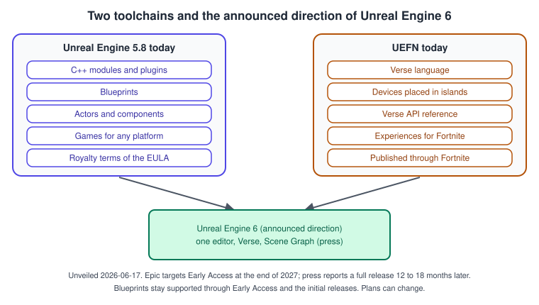
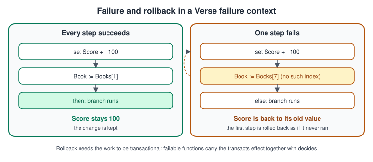
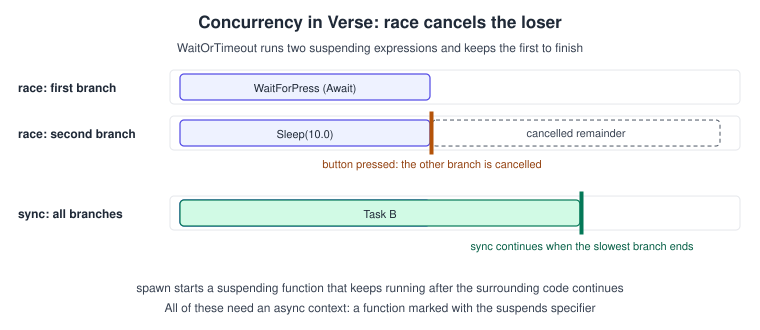

Verse, UEFN and UE6 Context
|
This content was generated with the assistance of AI and should be verified against the official documentation before being relied on in production. |
Unreal Engine 5.8 projects are written in C++ and Blueprints. A second toolchain exists next to them: Unreal Editor for Fortnite (UEFN), an editor for building experiences that run inside Fortnite, whose programming language is Verse. In June 2026 Epic announced that the two will become one engine, Unreal Engine 6. This page explains Verse and UEFN well enough to read their documentation and write a small device, describes what Epic has said about UE6, and says what that means for a project that starts today. It is context, not a tutorial for shipping a UEFN island.
The facts were checked in November 2026 against Epic’s Unreal Engine 5.8 and UEFN documentation (5.8 was released on 2026-06-17; the latest hotfix found is 5.8.4) and against press coverage of the State of Unreal keynote. UE6 is an announcement, not a product: nothing here can be downloaded yet, and the plans can change. The sources are labeled so that you can tell what Epic published from what the press reported. The same Bookshelf from the other pages appears here as a small Verse device.
Two toolchains today

| Topic | Unreal Engine 5.8 | UEFN |
|---|---|---|
Language |
C++ and Blueprints |
Verse (Epic’s documentation describes it as the language for gameplay programming in UEFN) |
Building blocks |
Actors, components, the gameplay framework (see Gameplay Framework) |
Devices placed in a level, configured in the editor and connected by events |
Output |
A game for any platform you package for |
An experience that runs inside Fortnite |
Terms |
The Unreal Engine EULA and the royalty terms on Versions, Licensing and History |
Terms published by Epic for Fortnite creators |
Source access |
Engine source on GitHub for licensees |
Editor and Verse API provided by Epic |
Epic’s documentation presents Verse through UEFN. The engine source also contains the Verse compiler as a module (the C++ API reference lists the Verse compiler’s version enumeration for Unreal Engine 5.5), but no official tutorial for writing Verse in the Unreal Engine 5.8 editor was found, so treat UEFN as the place to learn the language today.
What Verse is
Epic describes Verse as a programming language built for video games and game-like experiences. In UEFN it fills the gaps that devices cannot cover: new functionality, simpler wiring of complex device setups, complex interactions between players and the world, precise control over when things happen, new game rules and dynamic gameplay that depends on the state of players or the world. The documentation also says the Verse API for UEFN is still being developed. The learning material Epic points to is an onboarding guide, a basics course, the Book of Verse language reference (hosted as a public GitHub repository), the Verse Glossary, a code style guide and the Verse API reference. According to Wikipedia, Verse was first implemented in UEFN on 2023-03-23, and was presented in December 2022 as an open-source functional-logic language conceived by Tim Sweeney.
Three ideas make Verse feel different from C++ and Blueprints: failure is a control-flow mechanism with automatic rollback, effects are part of a function’s type, and concurrency is structured.
Failure and rollback
In Verse "failure" is not an error; it is the way a conditional is expressed. A failable expression either succeeds with a value or fails without one: a comparison, a decision operator, a query such as Tired?, or indexing an array with an invalid index. A failable expression may only run inside a failure context, and if is the usual one. If any failable expression in the context fails, everything the context did before it is rolled back as if it never ran.

using { /Fortnite.com/Devices }
using { /Verse.org/Simulation }
using { /UnrealEngine.com/Temporary/Diagnostics }
book := class:
Title : string
Pages : int
# A failable function: it can fail, and its effects can be rolled back.
PagesOfBook(Library : []book, Index : int)<decides><transacts> : int =
Library[Index].Pages
shelf_device := class(creative_device):
var Score : int = 0
Library : []book = array{book{Title := "Dune", Pages := 412}, book{Title := "Emma", Pages := 474}}
OnBegin<override>()<suspends> : void =
if (Pages := PagesOfBook(Library, 1)):
Print("Second book has {Pages} pages")
else:
Print("No such book")
# The write to Score is undone because Library[7] fails.
if:
set Score += 100
Book := Library[7]
then:
Print("Shelved {Book.Title}")
else:
Print("Score is still {Score}")Effects: decides, transacts, suspends
Specifiers after a function’s parameter list state its effects, and the compiler checks them. decides marks a function that can fail, so calling it is itself a failable expression, and it must also carry transacts, the effect that lets the function’s actions be rolled back if it fails. suspends marks an asynchronous function (a coroutine) and creates an async context for its body. The effect hierarchy has converges (guaranteed to produce a value in finite time) and computes (same output for the same input) at the pure end, varies above them and transacts at the top. override and similar specifiers attach to members, and abstract and final control subclassing of classes.
| Specifier | Meaning in practice |
|---|---|
|
The call can fail; use it inside |
|
Its writes can be rolled back; the top of the effect hierarchy. |
|
The function can wait across game ticks; call it only from an async context. |
|
From pure and guaranteed to finish, up to code that may vary without being transactional. |
Source: Verse Glossary
Structured concurrency
Verse has concurrency expressions instead of threads and callbacks. spawn runs a suspending function asynchronously (for example one instance per player). sync runs several expressions concurrently and finishes when all are done. race runs them concurrently and cancels the others as soon as one finishes. rush also runs expressions concurrently but lets the slower ones continue, and branch starts a block of async expressions while the code after it runs immediately. A suspending call must sit in an async context: a suspends function or one of these expressions. Sleep(0.0) waits until the next tick and an infinite sleep waits forever and only returns if cancelled, for example by race.

using { /Fortnite.com/Devices }
using { /Verse.org/Simulation }
using { /UnrealEngine.com/Temporary/Diagnostics }
# Waits until a player presses the button.
WaitForPress(Button : button_device)<suspends> : void =
Button.InteractedWithEvent.Await()
# Either a press or ten seconds, whichever happens first; the loser is cancelled.
WaitOrTimeout(Button : button_device)<suspends> : void =
race:
WaitForPress(Button)
Sleep(10.0)
Print("The reading nook is free again")
reading_nook_device := class(creative_device):
@editable
Button : button_device = button_device{}
OnBegin<override>()<suspends> : void =
WaitOrTimeout(Button)The 31.00 Fortnite release notes record that the compiler began creating scopes for code inside race, sync, rush and spawn, which makes some code that compiled before fail; Epic suggests using the value that race returns, as in X := race: followed by the expressions.
A Verse device for the Bookshelf
A UEFN device is the basic building block for game mechanics. Verse code lives in a class derived from creative_device; you place it in the level, expose references with @editable and assign the real devices in the Details panel. OnBegin is called when the game starts and may suspend. Events expose Subscribe, which registers a handler and returns a cancelable you can cancel to unsubscribe; the handler signature must match the event (for a button’s InteractedWithEvent it takes one agent).
using { /Fortnite.com/Devices }
using { /Verse.org/Simulation }
using { /UnrealEngine.com/Temporary/Diagnostics }
# Counts books put back on the shelf through a return slot button.
bookshelf_device := class(creative_device):
@editable
ReturnButton : button_device = button_device{}
var Score : int = 0
OnBegin<override>()<suspends> : void =
ReturnButton.InteractedWithEvent.Subscribe(OnBookReturned)
OnBookReturned(Agent : agent) : void =
set Score += 100
Print("Book shelved, score {Score}")The same behavior in the Bookshelf’s Unreal Engine project is the pair of C++ classes ABookshelfGameState (the replicated Score) and ABookshelfGameMode (the rule that adds points), with the interaction raised by IBookInteractable::Interact. The comparison shows where the models differ:
| Concept | Unreal Engine 5.8 (C++ and Blueprints) | Verse in UEFN |
|---|---|---|
Unit of gameplay |
Actor with components |
Device (a class derived from |
Editor-exposed reference |
|
|
Events |
Delegates and Blueprint dispatchers |
Events with |
Conditional on missing data |
Null checks, |
Failable expressions and failure contexts |
Asynchronous work |
Timers, latent actions, async tasks |
|
Undo a partial change |
Write the undo yourself |
Automatic rollback inside the failure context |
The announced direction of Unreal Engine 6
What Epic published. At State of Unreal on 2026-06-17 Epic unveiled Unreal Engine 6 (the keynote report is on Epic’s site, see the references). Epic’s stated target is an Early Access release at the end of 2027, with the Unreal Engine 5 and UEFN tool sets merged into one editor built around Verse. Blueprints stay supported through Early Access and the initial releases. Epic’s post "The road to UE6" plans the full release 12 to 18 months after Early Access and says that Actors and Blueprints are in the early versions and are to be deprecated later, with conversion tools.
What the press reported. GamesBeat, summarizing the keynote, reports Tim Sweeney’s formula "UE5 plus UEFN equals UE6", that gameplay programming moves to Verse and a new gameplay framework called Scene Graph built on it, that Blueprints and Actors will appear in early UE6 versions and that Epic plans to deprecate them once the new framework has matured, with conversion tools, and that studios can keep shipping traditional games as they do today. It also reports that Epic is not planning another official UE5 release after 5.8 while reserving the option of a 5.9. Other outlets differ on how long Blueprints will remain; Epic’s post gives no date for the deprecation, so treat the timing as open.
What this means for a 5.8 project. Epic describes a clear path for UE5 studios with no forced hard break, so there is no reason to stop using C++ and Blueprints or to wait for UE6. Practical habits that age well: keep gameplay rules in plain C++ functions and data assets (as the scoring rule on Testing and Automation is), prefer events and interfaces over deep inheritance (see Blueprint Communication), and try UEFN once to learn failure contexts and structured concurrency, which are the ideas Verse brings. The long-term plan can still change.
Common mistakes
-
Treating UE6 as released. It is an announcement with an Early Access target; plan against Unreal Engine 5.8 today.
-
Assuming Verse replaces Blueprints now. In Unreal Engine 5.8 projects Blueprints and C++ remain the supported route; Verse is a UEFN language today.
-
Reading
ifas a plain boolean test. In Verse the condition is a failable expression, and a failure rolls back its earlier steps. -
Calling a
suspendsfunction from a normal function. It needs an async context. -
Writing an infinite loop without a suspending call. A loop with no
SleeporAwaitnever lets the game tick; put a suspending call in it. -
Wrong handler signature for
Subscribe. It must match the event: oneagentfor a button interaction. -
Mixing up the documentation sets. Verse pages live in the UEFN documentation, not under the Unreal Engine documentation tree.
Performance notes
-
In Verse, code that waits should wait with
SleeporAwait, not poll every tick; aSleep(0.0)resumes at the next tick. -
racecancels the losing branch, which frees its work; prefer it over a flag that a background loop keeps checking. -
In the Unreal Engine project, keep gameplay rules in small functions with no engine dependencies; they are the part most likely to be ported or reused when the toolchains merge.
What changed recently
| Date or version | Change |
|---|---|
2022-12 and 2023-03 |
Per Wikipedia, Verse presented as an open-source functional-logic language (December 2022) and first implemented in UEFN on 2023-03-23. |
Fortnite 31.00 |
The compiler creates scopes for code inside |
2026-06-17 |
Unreal Engine 5.8 is released. At State of Unreal Epic unveils Unreal Engine 6, merging Unreal Engine 5 and UEFN around Verse, with Early Access targeted for the end of 2027. Some sources give 2026-05-24 as the date of the first announcement. |
UE 5.8 |
Release notes list a UEFN-related audio change: the VolumeBase input of one-shot and looping MetaSounds exposed to UEFN is unclamped, with a range of -60 to 12 dB. |
Where the books are outdated
Unreal Development Kit Game Programming with UnrealScript: Beginner’s Guide by Rachel Cordone (2011) teaches the Unreal Development Kit of the Unreal Engine 3 era: UnrealScript, Kismet visual scripting and UDK packages. It is useful as history only. UnrealScript was announced for removal at GDC 2012 and was dropped in Unreal Engine 4 (2014) in favor of C++, with Blueprints replacing Kismet. Today’s scripting options are C++ and Blueprints in the engine and Verse in UEFN, and Verse is planned to be the main language of Unreal Engine 6. The history of these languages is on Versions, Licensing and History.